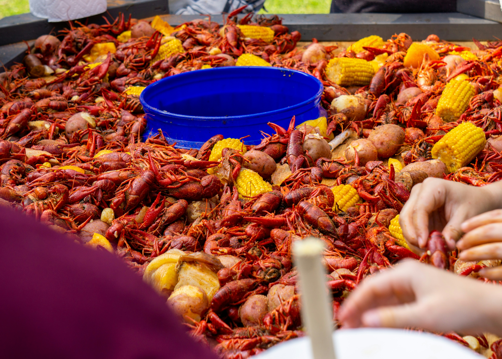

The Gen X Experience
Analog Connection: Meeting in person, using landlines, or finding friends by looking for parked bikes.
True Adventure: Getting "lost on purpose" and exploring on foot or bike until the streetlights came on.
Independence: The latchkey culture—managing your own world while the grown-ups were at work.